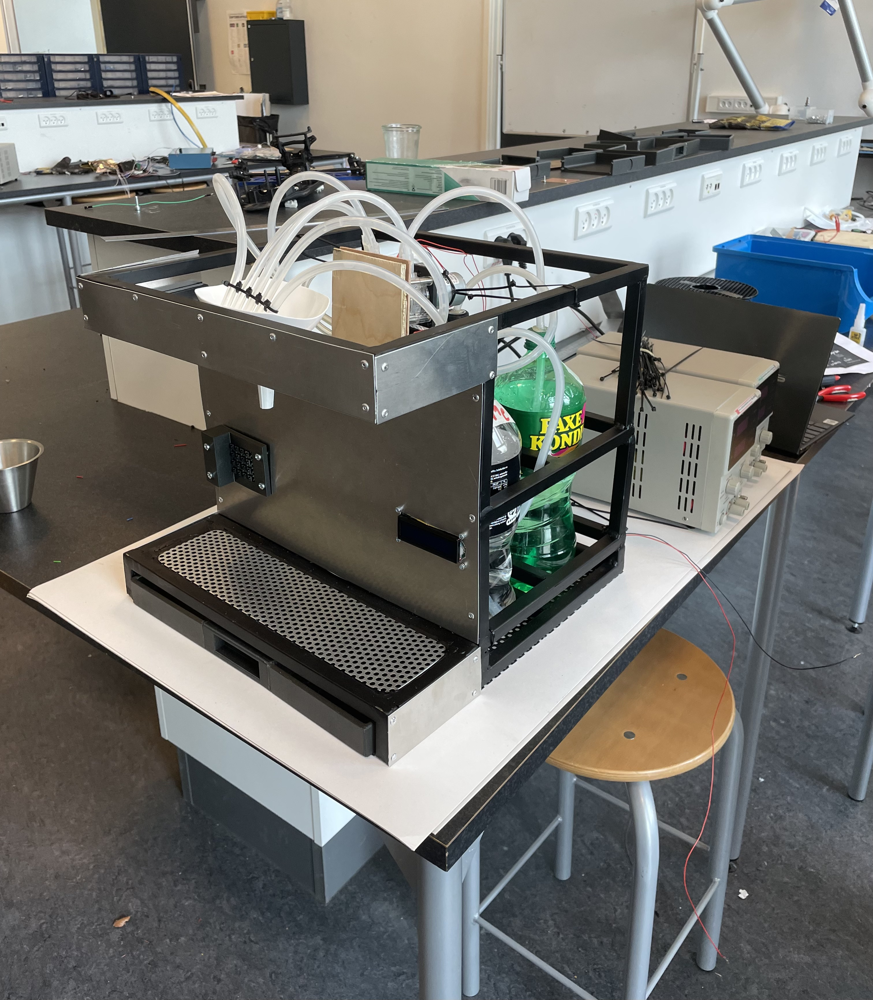

EKSAMENSOPGAVE
[Drink Maskine]
Sammen med tre andre udviklede jeg en automatisk drinkmaskine, der kunne lave 12 forskellige drinks. Maskinen valgte selv de rigtige pumper og doserede den korrekte mængde af hver væske. Projektet fungerede rigtig godt og endte med karakteren 12.